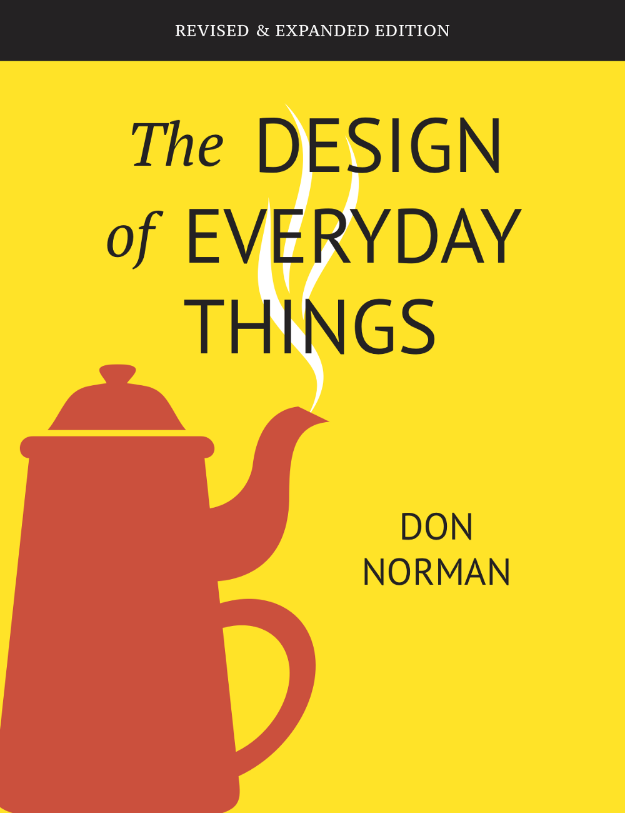

设计周刊 Design Weekly #38
📕 设计资源
Mac Dock Mockup
https://www.figma.com/community/file/918890506938140121
unfold 设计工作室提供的 Mac Dock 设计模版，免费使用（背景由Apple创建），可以轻松地改变背景图片、颜色和应用块的颜色。
Game UI Database**- 游戏 UI 资源库**
333个游戏和11813截图，游戏界面设计师的终极参考工具。
UX设计作品集案例
https://medium.com/thinking-design/inspiring-examples-of-ux-design-portfolios-27df2a7c64f2
作为一名 UX 设计师，作品集就是你最好的名片。对于作品集的制作是很有挑战性的，文中引用了 6 位来自不同领域的设计师的作品集，涵盖了从研究布局到超简约不同设计范围，让我们一起看看其他设计师能带来什么灵感吧。
📗 设计文章
7 Principles of Design from “The Design of Everyday Things”
唐-诺曼所著的《日常事物的设计》是用户体验设计的开创性著作。无论设计师的经验水平如何，这本书都能提供宝贵的经验。更重要的是，这本书可以作为一个基础性的视角，让我们了解什么是设计，设计的作用，以及为什么好的设计至关重要。
文中包含了用户体验设计基础的七项原则：
- 运用世界知识和头脑知识；
- 简化任务结构；
- 使事物可见：在执行和评估之间架起鸿沟；
- 正确获取映射；
- 利用约束的力量；
- 设计错误反馈；
- 当所有其他方法不发挥作用时，进行标准化。

Small animations; big impact
https://uxdesign.cc/a-guide-to-motion-design-principles-7f05f10ccd79
微动画是如何对用户体验产生影响以及它们如何改善KPI的（例如转换率和可发现性）。文中包含了两项用户研究，基于有140多个参与者进行了研究。
📙 设计新闻
2020 年的 20 个词
https://mp.weixin.qq.com/s/p7w4OhnCyv2LD-4R_vhH2g
又到了一年一度年度总结的时候，Voicer 使用微信交互文带大家回顾总结了 2020 的年度热度词
2020 年度 UX 设计工具调查结果
https://uxtools.co/survey-2020/
COVID-19改变了我们的生活方式以来，也改变我们的工作方式。视频会议和远程工作的兴起是显而易见的，但像设计这样高度协作工作，设计师在家中是如何与利益相关者和开发人员合作的？或者怎样与客户测试他们的设计？在文中4000多名设计师的回答中，我们可以找到答案。